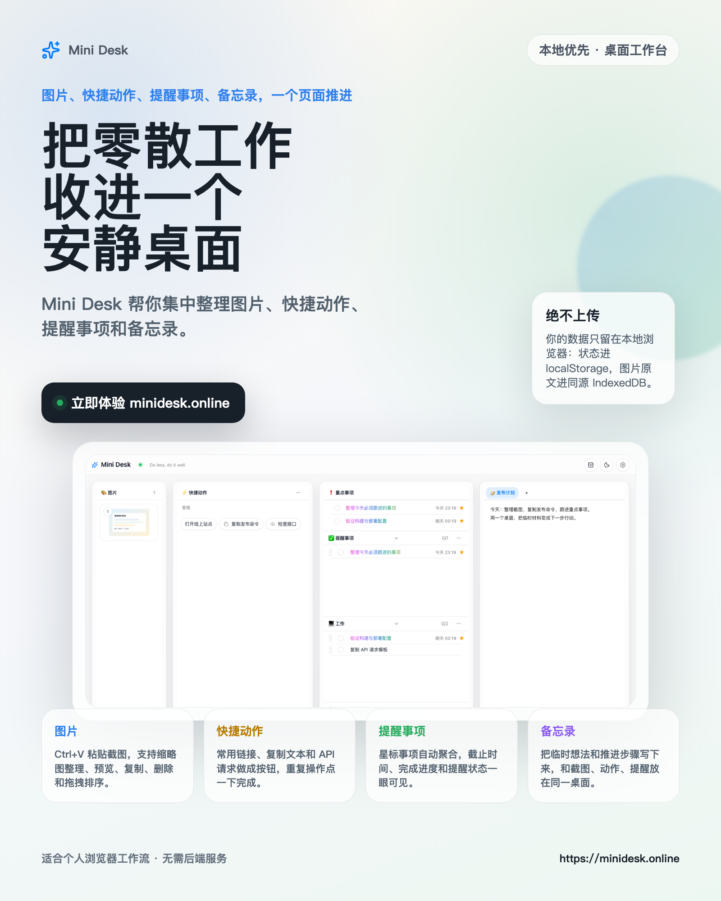

01
图片
Ctrl+V 粘贴截图，支持缩略图整理、预览、复制、删除和拖拽排序。
 Mini Desk
Mini Desk
图片、快捷动作、提醒事项、备忘录，一个页面推进。默认本地优先，适合个人浏览器工作流。
Mini Desk 不把桌面变成复杂系统，而是把每天重复出现的四类内容放进同一张工作台。
Ctrl+V 粘贴截图，支持缩略图整理、预览、复制、删除和拖拽排序。
常用链接、复制文本和 API 请求做成按钮，重复操作点一下完成。
星标事项自动聚合，截止时间、完成进度和提醒状态一眼可见。
把临时想法和推进步骤写下来，和图片、动作、提醒放在同一桌面。
Mini Desk 默认不依赖后端。你的状态、图片原文和自定义资源都留在当前浏览器站点内。

先收住图片和文本，再把重复动作按钮化，最后把关键事项放进今日重点。
粘贴图片或拖入素材，保留当下的视觉证据。
把常用链接、复制文本和 API 请求做成快捷动作。
单击新增提醒事项，星标后进入今日重点。
在备忘录里记录推进步骤，减少上下文丢失。

Landing Page 保持同一套视觉语言：大标题、真实产品界面、本地优先承诺，以及四个清晰的功能入口。
适合在电脑浏览器中使用。无需注册后端服务，打开就能开始整理。